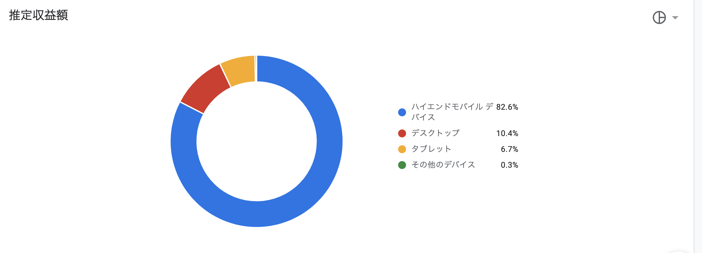

田中裕 Portfolio Site
about me
パーソナル情報
田中 裕（たなか ゆう）
1986年02月02日生まれ / 35歳
経歴
- ・2007年3月 ： 東京アナウンス学院 放送声優科 卒業
-
・2009年12月 ： 携帯電話の販売代理店に就職
東京の専門学校を卒業後、23歳までは役者活動に挑戦していました。
その後、山梨県に帰省し携帯電話の代理店に就職しました。
面倒見の良さを活かし率先して新人のマネジメントを行い、チームでフォローがし易い環境を構築。 結果、異動した先々での離職者を0人に抑え、社員定着率の向上に貢献しました。
- ・2015年4月 ： 携帯電話の併売店 退職
-
・2015年5月 ： 大手家電量販店のキャリアショップへ転職
販売業務が専門から、より専門的な業務を行いたく、大手の携帯電話の販売代理店へ転職しました。
管理能力を評価され副店長に昇進し、異動先の店舗では顧客のリピーター化に注力しました。
その甲斐あって法人顧客と懇意になり、毎月指名で20組〜30組の顧客紹介を頂けるようになりました。
結果、新店舗の販売実績を移転前の前年比150%の上昇に成功しました
- ・2020年2月 ： 大手家電量販店のキャリアショップ 退職
- ・2020年3月 ： Progateでプログラミング学習開始
- ・2020年5月〜7月 プログラミングスクールでプログラミングを体系的に学習
- ・2020年8月より現在転職活動
- ・2021年2月よりSES経由で、大手保険案件の上流工程に参画開始
- ・2021年4月 AWSクラウドプラクティショナー取得
2020年に学習したプログラミングスキル
athlaliel
- 学習したもの
HTML / CSS / Ruby / Ruby on Rails / JavaScript / jQuery / AWS (EC2、S3、Route53、ACM) - SNS経由でエンジニアにDMを送り、実務開発に参画し、Railsアプリのサーバーサイドを開発中
どの様な業務をしたいか
RubyやPHPなどの他のサーバーサイド言語の開発経験も積んでいきたい。
個人的にcloud系サービスを多用しているために、AWSをはじめとしたインフラ方面にも関心を持っています。
IT業界での知見を深めて技術を身に着けるために、挑戦できる事には何でも挑戦していきたいと考えています。
なぜエンジニアになりたいのか？
■なぜエンジニアになりたいのか？
ITの導入でオンライン業務の普及が進み、店舗業務の管理が容易になった。
一方で現場目線では改修したい点もあったが、直接改修や意見を出せる環境ではなかった。
既存製品を販売するだけでなく、自身で業務を効率化するツールを作りたくプログラミング学習を始めました。
自己PR
■自己PR
①ユーザー目線を意識する
顧客折衝時は自身の知識を当たり前と考えず、「どう案内される事で理解しやすいか」のユーザー目線を持って行動していました。
結果、「説明が分かりやすい」と、好評で長期的なリピーター関係の構築に成功しました。
この考えは新人教育でも活かされ、チーム全体の向上に活かせるものと自信を持っています。
②案件を獲得する為の行動力
開発経験を積む為に現役エンジニアにDMを送り、実務開発に参加する機会を得ました。
・サーバーサイドでモデル開発
・アドオンを使用してデプロイ
・ワイヤーフレームに合わせたMVC作成
実装の詳細は他者が確認出来る様に、現役エンジニアのチェックの上で Qiitaでアウトプットを行い Twitterでも発信しています。
③知識の吸収に貪欲
知識や技術を学ぶ事が好きなので、他者からは刺激を受けると評されます。
過去ブログを運営し、収益が発生するまで半年間毎日3000文字以上の記事を書き続けました。
必要なサーバーやドメインの知識は検索して補い、月間PV13万を達成しました。
学習意思の高さに自信があるので、移り変わりの早いIT業界でも活かせると考えております。
【直近1年の経験】
・プログラミング学習
・Railsの実務開発に参画中
・面接練習の主催
・定期的なQiita記事執筆
・ポートフォリオ品評会の主催
・paizaCランク
・AWSクラウドプラクティショナーを取得
Ruby on Rails
BreadLove
ソースコード
GitHub(BreadLove)こだわりポイント
- ・学んだRailsの定着率を上げる為に制作したアプリ
- twitterやInstagramと違い、一つのジャンルに特化したアプリを目的に作成しました。
- ・ジャンル特化する事で投稿の敷居を下げ、且つ食欲を唆らせる目的があります。
- ・着想のきっかけは、自身のパン好きと、美味しそうにパンを食べる姪っ子の姿を見たためです。
- ・AWSにアプリをデプロイし、EC2、S3、Route53、ACMを独自ドメインで使用しています。
自動デプロイ後に発生した本番環境の接続エラー対応は下記Qiitaに投稿 - →Qiita(本番環境に自動デプロイしたらwe're sorry, but something went wrong.エラーでアプリが使えない)
- ・ゲストログイン機能あり
- ・セキュリティを重視し、通信方式のHTTPS化を完了
使用したGem
- ・kaminari : ページネーション
- ・device : ログイン機能
- ・gretel : パンくず機能
Shinobi-bot(LINEBOT）

アプリの概要
- ・入力した言葉に対しランダム発話を行うLINEBOT
- ・特定の言葉には設定した言葉で返事を返します
- ・herokuでデプロイしています
ソースコード
GitHub(shinobi-bot)こだわりポイント
- ・教材で学んだオウム返しBOTや楽天APIと連携したBOTではなく、自分で設定した言葉を返すBOTを作成したかった
- ・ランダム返信が被らないように台詞のレパートリーを30個以上に設定
- ・LINEスタンプにも反応するように改修中
Javascript
クイズゲーム
制作したゲームの実行画面動画
アプリの概要
- ・Javascriptで動作するクイズゲーム
- ・４択問題で選択後に正誤判定の表示
- ・最終的に正誤数が表示される
ソースコード
GitHub(QuestionGame)こだわりポイント
- ・JavaScript学習時に作成したゲーム
- ・window画面に正誤判定・正解数を表示
- ・初めてBootStrapを使用し、CSSは不使用
- ・BootStrapの利便性を把握し、CSS,SCSSを使わない効率的なアプリ作成を学習
- ・サーバーサイドでもJavaScriptは必要なので、その知見を深める目的で作成しました
タイピングゲーム
制作したタイピングゲームの実行画面動画
アプリの概要
- ・JavascriptとJQueryで動作するタイピングゲーム
- ・スペースボタン押下でゲームスタート
- ・問題はランダムで表示される
ソースコード
GitHub(typinggame)こだわりポイント
- ・JavascriptとJQueryの学習時に作成したゲーム
- ・ゲーム終了後に入力の正誤判定・かかった時間を表示
- ・問題は3、5、10問から選択可能
- ・問題はランダムで表示される
Qiitaへ技術記事投稿
投稿したQiita記事の一部

こだわりポイント
- ・知識の定着率を上げるために、発生したエラー事象に加え、解決策も記述しております
- ・自身が困った内容は別な誰かの助けになると考え、定期的な発信を続けていきます
→困難を乗り越えた経緯を忘れずに次に活かす為に記述しております
Qiita記事
作成したQiita記事
【画像・Gif動画を使ってReadmeを彩ろう】【herokuで使用頻度が多かったコマンド集】
【Rubyの文法エラーと対策】
【本番環境に自動デプロイしたらwe're sorry, but something went wrong.でアプリが使えない】
【Personal access tokenを発行して、Resource not accessible by integrationエラーを解消する】
【nginxのエラー「413 Request Entity Too Large」の解決方法】
【Rubocopの設定を誤って地獄を見た件】
【.DS_storeファイルの個別削除】
【文系・AWS実務未経験がクラウドプラクティショナーを取得するまで】
Others
ポートフォリオ品評会を主催、登壇
登壇したポートフォリオ品評会の風景


こだわりポイント
- ・発表者6名・評価者含め２０名規模のポートフォリオ品評会に登壇し、トップバッターに立候補し発表
- ・不特定多数の前で発表する事で発表への自信がつきました。
- ・他者視点で評価をもらう事で、自分だけでは気づけない機能案や修正点に気づけました。
→着想の視点が面白いと評価された事で、次の作品を作るモチベーションにも繋がり、また登壇したいと考えています。
面接練習の主催
主催した面接練習の風景
こだわりポイント
- ・少人数で行う事で、一人あたりの密度を高くして行う事を心がけた
- ・およそ2時間で終了し、情報共有や意見交換も行う
- ・定期的に主催予定
→一度できた縁は大事にする事を心がけ、長期的に良好な人間関係を維持しております
WordPressでトレンドブログを作成
Adsence広告で得た収益結果
活動当時の注意や心境
- ・独学でレンタルサーバー・ドメインを学習・レンタルしブログ構築
- ・GoogleAdsence広告を記事内に表示させ収益源とした
- ・一記事3000文字以上を収益が発生し始めるまでの半年間、毎日執筆
- ・運営当時はプログラミングの知識は一切なし
→約3年継続し、現在は閉鎖した為、収益画像のみ表示
中古商品を仕入れ、amazonFBAを使用して自動販売
仕入れツール使用図 & 収益図

活動当時の注意や心境
- ・本業終了後、休日を利用して都道府県を跨いで仕入れを行い時間を有効活用
- ・時間を忘れて仕入れに勤しむ事で、商品目利きの幅が広がった
- ・時には仕入れの判断ミスから不良在庫を抱えてしまい、在庫処分の為に値段調整に四苦八苦
- ・値付けの厳しさを知り試行錯誤を繰り返し、販売できた時は格段の嬉しさを感じた
→上京に伴い自家用車を手放した為、現在は活動停止